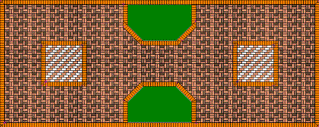

Программа предназначена для разработки проектов укладки тротуарной
плитки. Основные возможности:
- Плитка любой формы. Рисовать можно не только отрезками, но и дугами тоже.
Внутри контура плитки можно нарисовать декоративные линии.
- Можно создавать наборы плиток и укладывать участок узором, составленным из плиток разной формы.
- Участки любой формы и любого размера. Прямоугольные, квадратные, круглые, трапецевидные,
какие нарисуете. Границы участка рисуются отрезками и дугами.
- Внутри участка можно оставлять незаполненные места.
- Плитку на участке можно уложить любым узором, какой придумаете.
Кроме того, укладку можно сделать под любым углом, выравнивая по любой из сторон.
- Уложенную плитку можно снять и уложить заново. И снова снять, и снова уложить,
подбирая узоры и расположение.
- Уложенную плитку можно раскрасить цветами. По одной или группами. Составить фрагмент
орнамента и распространить его на весь участок.
- Весь участок можно задекорировать "под камень". Рисунок текстуры можно взять из программы,
а можно взять свой.
- Можно напечатать эскиз проекта. Целиком или только контур. А можно только указанную часть.
- По готовому проекту можно узнать, сколько понадобится целых плиток и сколько половинок.
С разделением по цветам.
- Удобные инструменты рисования и редактирования чертежей.
Можно задавать точные размеры. Удобное масштабирование.
- Программу можно использовать для проектирования выполнения любых других работ из
одинаковых повторяющихся элементов: настилка паркета, облицовка керамической плиткой и т.п.